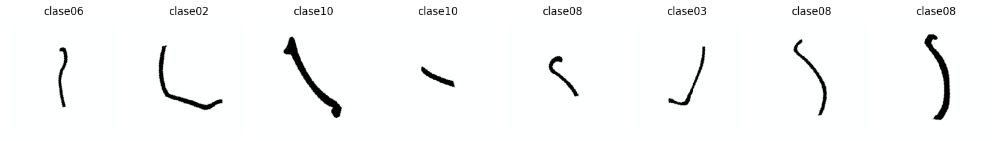
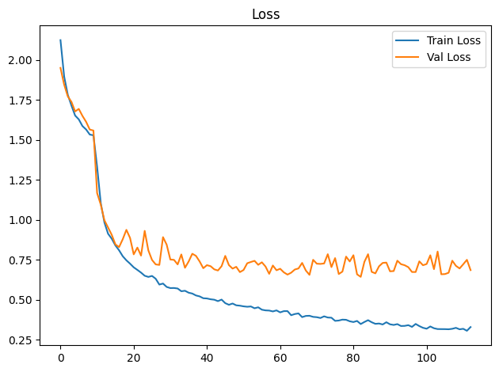
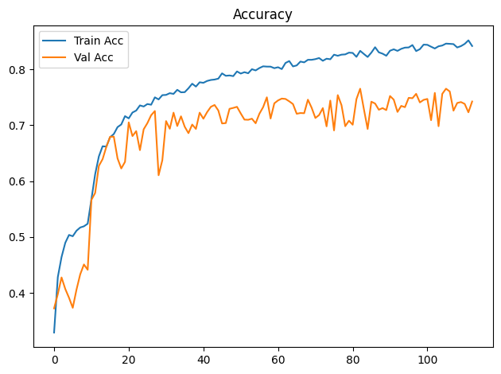
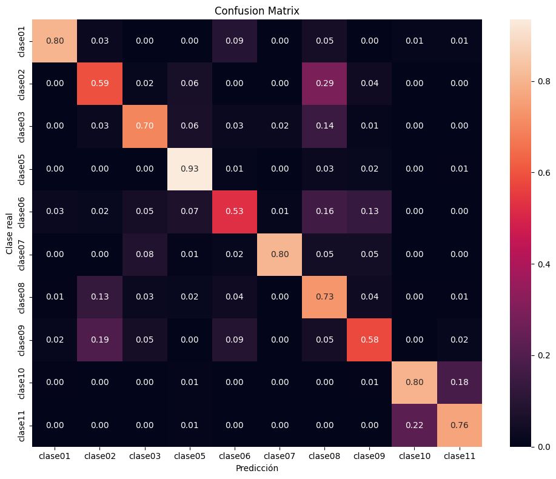

Dispositivo utilizado para procesamiento: CUDA - NVIDIA GeForce GTX 1650Entrenamiento de CNN ResNet-18 con Transfer Learning
Objetivos
- Construir un modelo baseline de clasificación mediante transfer learning con ResNet18 preentrenada.
- Entrenar inicialmente solo la capa clasificadora y descongelar
layer4enUNFREEZE_EPOCHcon una tasa de aprendizaje menor. - Aplicar transformaciones y aumentación de datos al conjunto de entrenamiento.
- Entrenar y validar el modelo registrando loss y accuracy por época.
- Detener el entrenamiento si val_loss no mejora suficientemente durante la paciencia configurada.
- Evaluar el modelo de la mejor época de validación sobre el conjunto de prueba.
- Analizar los resultados mediante accuracy, precision, recall, F1-score, reporte de clasificación y matriz de confusión normalizada.
- Guardar los pesos restaurados de la mejor época de validación (o los finales si se desactiva la parada anticipada).
Dispositivo para procesamiento
División de datos
La pertenencia de cada imagen a train, val o test se lee de la metadata generada por el notebook de división. La relación se realiza mediante ruta_relativa; por tanto, el split no se recalcula aunque cambien la semilla o los parámetros del entrenamiento.
Dataset seleccionado: unificado
Directorio de datos: /home/rafael/Dev/vasijas/data/12.unificado_divididos_en_train_val_y_test
Metadata de split: data/12.unificado_divididos_en_train_val_y_test/metadata.csv
Clases: clase01 clase02 clase03 clase05 clase06 clase07 clase08 clase09 clase10 clase11
Split persistido -> train: 14231, val: 3059, test: 3059
Conteo train por clase: [342, 608, 950, 741, 684, 646, 3724, 266, 4712, 1558]
Pesos de clase: [4.161, 2.341, 1.498, 1.921, 2.081, 2.203, 0.382, 5.35, 0.302, 0.913]Epoch 1/300
Train Loss: 2.1251 | Train Acc: 0.3294 | Val Loss: 1.9514 | Val Acc: 0.3727
Tiempo de epoch: 0:01:26.661462
Epoch 2/300
Train Loss: 1.8975 | Train Acc: 0.4286 | Val Loss: 1.8466 | Val Acc: 0.3982
Tiempo de epoch: 0:01:23.858452
Epoch 3/300
Train Loss: 1.7825 | Train Acc: 0.4644 | Val Loss: 1.7729 | Val Acc: 0.4279
Tiempo de epoch: 0:01:25.991029
Epoch 4/300
Train Loss: 1.7152 | Train Acc: 0.4898 | Val Loss: 1.7385 | Val Acc: 0.4073
Tiempo de epoch: 0:01:24.151262
Epoch 5/300
Train Loss: 1.6529 | Train Acc: 0.5039 | Val Loss: 1.6787 | Val Acc: 0.3916
Tiempo de epoch: 0:01:24.438406
Epoch 6/300
Train Loss: 1.6289 | Train Acc: 0.5016 | Val Loss: 1.6946 | Val Acc: 0.3737
Tiempo de epoch: 0:01:25.971959
Epoch 7/300
Train Loss: 1.5871 | Train Acc: 0.5114 | Val Loss: 1.6507 | Val Acc: 0.4060
Tiempo de epoch: 0:01:24.334739
Epoch 8/300
Train Loss: 1.5656 | Train Acc: 0.5172 | Val Loss: 1.6137 | Val Acc: 0.4335
Tiempo de epoch: 0:01:24.335147
Epoch 9/300
Train Loss: 1.5340 | Train Acc: 0.5194 | Val Loss: 1.5653 | Val Acc: 0.4511
Tiempo de epoch: 0:01:25.069907
Epoch 10/300
Train Loss: 1.5293 | Train Acc: 0.5239 | Val Loss: 1.5591 | Val Acc: 0.4416
Tiempo de epoch: 0:01:24.301995
Epoch 11: se descongela layer4 con lr=1.00e-05 (head lr=1.00e-04)
Epoch 11/300
Train Loss: 1.3327 | Train Acc: 0.5675 | Val Loss: 1.1678 | Val Acc: 0.5665
Tiempo de epoch: 0:01:58.065247
Epoch 12/300
Train Loss: 1.1053 | Train Acc: 0.6123 | Val Loss: 1.0954 | Val Acc: 0.5789
Tiempo de epoch: 0:01:56.393482
Epoch 13/300
Train Loss: 0.9833 | Train Acc: 0.6443 | Val Loss: 0.9972 | Val Acc: 0.6273
Tiempo de epoch: 0:01:56.320211
Epoch 14/300
Train Loss: 0.9130 | Train Acc: 0.6624 | Val Loss: 0.9519 | Val Acc: 0.6394
Tiempo de epoch: 0:01:56.532578
Epoch 15/300
Train Loss: 0.8819 | Train Acc: 0.6618 | Val Loss: 0.9061 | Val Acc: 0.6613
Tiempo de epoch: 0:02:02.409538
Epoch 16/300
Train Loss: 0.8398 | Train Acc: 0.6786 | Val Loss: 0.8465 | Val Acc: 0.6793
Tiempo de epoch: 0:01:56.556693
Epoch 17/300
Train Loss: 0.8095 | Train Acc: 0.6843 | Val Loss: 0.8294 | Val Acc: 0.6796
Tiempo de epoch: 0:01:56.451564
Epoch 18/300
Train Loss: 0.7724 | Train Acc: 0.6966 | Val Loss: 0.8785 | Val Acc: 0.6407
Tiempo de epoch: 0:01:59.065020
Epoch 19/300
Train Loss: 0.7466 | Train Acc: 0.7014 | Val Loss: 0.9375 | Val Acc: 0.6228
Tiempo de epoch: 0:01:56.527268
Epoch 20/300
Train Loss: 0.7258 | Train Acc: 0.7163 | Val Loss: 0.8869 | Val Acc: 0.6345
Tiempo de epoch: 0:01:57.624020
Epoch 21/300
Train Loss: 0.7028 | Train Acc: 0.7122 | Val Loss: 0.7840 | Val Acc: 0.7051
Tiempo de epoch: 0:01:56.191347
Epoch 22/300
Train Loss: 0.6866 | Train Acc: 0.7227 | Val Loss: 0.8265 | Val Acc: 0.6806
Tiempo de epoch: 0:02:00.007523
Epoch 23/300
Train Loss: 0.6697 | Train Acc: 0.7262 | Val Loss: 0.7762 | Val Acc: 0.6894
Tiempo de epoch: 0:01:57.293482
Epoch 24/300
Train Loss: 0.6501 | Train Acc: 0.7354 | Val Loss: 0.9310 | Val Acc: 0.6554
Tiempo de epoch: 0:01:57.642450
Epoch 25/300
Train Loss: 0.6427 | Train Acc: 0.7335 | Val Loss: 0.8085 | Val Acc: 0.6927
Tiempo de epoch: 0:01:57.462032
Epoch 26/300
Train Loss: 0.6489 | Train Acc: 0.7379 | Val Loss: 0.7491 | Val Acc: 0.7038
Tiempo de epoch: 0:01:56.608141
Epoch 27/300
Train Loss: 0.6314 | Train Acc: 0.7366 | Val Loss: 0.7212 | Val Acc: 0.7179
Tiempo de epoch: 0:01:57.982863
Epoch 28/300
Train Loss: 0.5948 | Train Acc: 0.7498 | Val Loss: 0.7179 | Val Acc: 0.7254
Tiempo de epoch: 0:01:58.009635
Epoch 29/300
Train Loss: 0.6013 | Train Acc: 0.7461 | Val Loss: 0.8917 | Val Acc: 0.6107
Tiempo de epoch: 0:01:56.516341
Epoch 30/300
Train Loss: 0.5801 | Train Acc: 0.7538 | Val Loss: 0.8448 | Val Acc: 0.6375
Tiempo de epoch: 0:01:56.374094
Epoch 31/300
Train Loss: 0.5729 | Train Acc: 0.7542 | Val Loss: 0.7516 | Val Acc: 0.7074
Tiempo de epoch: 0:01:58.112041
Epoch 32/300
Train Loss: 0.5734 | Train Acc: 0.7573 | Val Loss: 0.7496 | Val Acc: 0.6937
Tiempo de epoch: 0:01:56.700413
Epoch 33/300
Train Loss: 0.5703 | Train Acc: 0.7560 | Val Loss: 0.7210 | Val Acc: 0.7225
Tiempo de epoch: 0:01:56.734943
Epoch 34/300
Train Loss: 0.5531 | Train Acc: 0.7633 | Val Loss: 0.7835 | Val Acc: 0.6986
Tiempo de epoch: 0:02:00.348243
Epoch 35/300
Train Loss: 0.5561 | Train Acc: 0.7588 | Val Loss: 0.7000 | Val Acc: 0.7159
Tiempo de epoch: 0:01:56.999775
Epoch 36/300
Train Loss: 0.5440 | Train Acc: 0.7591 | Val Loss: 0.7392 | Val Acc: 0.6973
Tiempo de epoch: 0:01:56.316126
Epoch 37/300
Train Loss: 0.5386 | Train Acc: 0.7661 | Val Loss: 0.7878 | Val Acc: 0.6858
Tiempo de epoch: 0:01:58.315831
Epoch 38/300
Train Loss: 0.5267 | Train Acc: 0.7742 | Val Loss: 0.7746 | Val Acc: 0.7012
Tiempo de epoch: 0:01:57.556507
Epoch 39/300
Train Loss: 0.5209 | Train Acc: 0.7691 | Val Loss: 0.7397 | Val Acc: 0.6934
Tiempo de epoch: 0:01:58.225610
Epoch 40/300
Train Loss: 0.5094 | Train Acc: 0.7768 | Val Loss: 0.6972 | Val Acc: 0.7225
Tiempo de epoch: 0:01:57.886983
Epoch 41/300
Train Loss: 0.5079 | Train Acc: 0.7758 | Val Loss: 0.7164 | Val Acc: 0.7117
Tiempo de epoch: 0:01:57.594787
Epoch 42/300
Train Loss: 0.5029 | Train Acc: 0.7791 | Val Loss: 0.7098 | Val Acc: 0.7234
Tiempo de epoch: 0:01:57.630061
Epoch 43/300
Train Loss: 0.5001 | Train Acc: 0.7809 | Val Loss: 0.6902 | Val Acc: 0.7329
Tiempo de epoch: 0:01:56.614025
Epoch 44/300
Train Loss: 0.4912 | Train Acc: 0.7817 | Val Loss: 0.6829 | Val Acc: 0.7362
Tiempo de epoch: 0:01:56.941134
Epoch 45/300
Train Loss: 0.5008 | Train Acc: 0.7833 | Val Loss: 0.7099 | Val Acc: 0.7264
Tiempo de epoch: 0:01:57.871468
Epoch 46/300
Train Loss: 0.4786 | Train Acc: 0.7927 | Val Loss: 0.7745 | Val Acc: 0.7032
Tiempo de epoch: 0:01:57.088267
Epoch 47/300
Train Loss: 0.4683 | Train Acc: 0.7883 | Val Loss: 0.7167 | Val Acc: 0.7038
Tiempo de epoch: 0:01:57.034027
Epoch 48/300
Train Loss: 0.4762 | Train Acc: 0.7890 | Val Loss: 0.6949 | Val Acc: 0.7293
Tiempo de epoch: 0:01:56.422349
Epoch 49/300
Train Loss: 0.4650 | Train Acc: 0.7878 | Val Loss: 0.7061 | Val Acc: 0.7310
Tiempo de epoch: 0:01:57.537527
Epoch 50/300
Train Loss: 0.4627 | Train Acc: 0.7961 | Val Loss: 0.6729 | Val Acc: 0.7329
Tiempo de epoch: 0:01:56.503149
Epoch 51/300
Train Loss: 0.4585 | Train Acc: 0.7924 | Val Loss: 0.6860 | Val Acc: 0.7212
Tiempo de epoch: 0:01:56.509633
Epoch 52/300
Train Loss: 0.4560 | Train Acc: 0.7948 | Val Loss: 0.7283 | Val Acc: 0.7100
Tiempo de epoch: 0:01:56.886918
Epoch 53/300
Train Loss: 0.4579 | Train Acc: 0.7929 | Val Loss: 0.7363 | Val Acc: 0.7097
Tiempo de epoch: 0:01:57.216049
Epoch 54/300
Train Loss: 0.4465 | Train Acc: 0.8002 | Val Loss: 0.7435 | Val Acc: 0.7117
Tiempo de epoch: 0:01:57.841821
Epoch 55/300
Train Loss: 0.4526 | Train Acc: 0.7980 | Val Loss: 0.7186 | Val Acc: 0.7035
Tiempo de epoch: 0:01:57.364470
Epoch 56/300
Train Loss: 0.4376 | Train Acc: 0.8022 | Val Loss: 0.7343 | Val Acc: 0.7205
Tiempo de epoch: 0:01:57.243923
Epoch 57/300
Train Loss: 0.4333 | Train Acc: 0.8053 | Val Loss: 0.7078 | Val Acc: 0.7323
Tiempo de epoch: 0:01:56.738175
Epoch 58/300
Train Loss: 0.4322 | Train Acc: 0.8048 | Val Loss: 0.6620 | Val Acc: 0.7499
Tiempo de epoch: 0:01:57.013370
Epoch 59/300
Train Loss: 0.4268 | Train Acc: 0.8047 | Val Loss: 0.7143 | Val Acc: 0.7120
Tiempo de epoch: 0:01:56.668599
Epoch 60/300
Train Loss: 0.4332 | Train Acc: 0.8020 | Val Loss: 0.6845 | Val Acc: 0.7391
Tiempo de epoch: 0:01:56.757873
Epoch 61/300
Train Loss: 0.4208 | Train Acc: 0.8037 | Val Loss: 0.6939 | Val Acc: 0.7444
Tiempo de epoch: 0:01:57.864652
Epoch 62/300
Train Loss: 0.4286 | Train Acc: 0.8004 | Val Loss: 0.6714 | Val Acc: 0.7476
Tiempo de epoch: 0:01:56.519849
Epoch 63/300
Train Loss: 0.4288 | Train Acc: 0.8113 | Val Loss: 0.6573 | Val Acc: 0.7470
Tiempo de epoch: 0:01:56.581582
Epoch 64/300
Train Loss: 0.4030 | Train Acc: 0.8147 | Val Loss: 0.6692 | Val Acc: 0.7427
Tiempo de epoch: 0:01:56.397766
Epoch 65/300
Train Loss: 0.4105 | Train Acc: 0.8051 | Val Loss: 0.6891 | Val Acc: 0.7378
Tiempo de epoch: 0:01:56.523736
Epoch 66/300
Train Loss: 0.4143 | Train Acc: 0.8069 | Val Loss: 0.6958 | Val Acc: 0.7205
Tiempo de epoch: 0:01:56.420483
Epoch 67/300
Train Loss: 0.3911 | Train Acc: 0.8138 | Val Loss: 0.7304 | Val Acc: 0.7218
Tiempo de epoch: 0:01:59.035347
Epoch 68/300
Train Loss: 0.3985 | Train Acc: 0.8124 | Val Loss: 0.6832 | Val Acc: 0.7215
Tiempo de epoch: 0:01:58.239633
Epoch 69/300
Train Loss: 0.3996 | Train Acc: 0.8169 | Val Loss: 0.6556 | Val Acc: 0.7457
Tiempo de epoch: 0:01:57.760485
Epoch 70/300
Train Loss: 0.3926 | Train Acc: 0.8169 | Val Loss: 0.7499 | Val Acc: 0.7313
Tiempo de epoch: 0:02:01.686611
Epoch 71/300
Train Loss: 0.3907 | Train Acc: 0.8181 | Val Loss: 0.7257 | Val Acc: 0.7130
Tiempo de epoch: 0:01:57.924634
Epoch 72/300
Train Loss: 0.3856 | Train Acc: 0.8201 | Val Loss: 0.7243 | Val Acc: 0.7182
Tiempo de epoch: 0:02:00.492748
Epoch 73/300
Train Loss: 0.3961 | Train Acc: 0.8152 | Val Loss: 0.7270 | Val Acc: 0.7306
Tiempo de epoch: 0:01:56.511166
Epoch 74/300
Train Loss: 0.3887 | Train Acc: 0.8189 | Val Loss: 0.7851 | Val Acc: 0.6979
Tiempo de epoch: 0:01:57.912098
Epoch 75/300
Train Loss: 0.3874 | Train Acc: 0.8179 | Val Loss: 0.7042 | Val Acc: 0.7440
Tiempo de epoch: 0:01:56.203145
Epoch 76/300
Train Loss: 0.3677 | Train Acc: 0.8261 | Val Loss: 0.7606 | Val Acc: 0.6907
Tiempo de epoch: 0:01:56.537498
Epoch 77/300
Train Loss: 0.3697 | Train Acc: 0.8242 | Val Loss: 0.6608 | Val Acc: 0.7538
Tiempo de epoch: 0:01:57.073309
Epoch 78/300
Train Loss: 0.3754 | Train Acc: 0.8262 | Val Loss: 0.6762 | Val Acc: 0.7359
Tiempo de epoch: 0:01:56.204644
Epoch 79/300
Train Loss: 0.3744 | Train Acc: 0.8266 | Val Loss: 0.7700 | Val Acc: 0.6983
Tiempo de epoch: 0:01:56.832013
Epoch 80/300
Train Loss: 0.3650 | Train Acc: 0.8297 | Val Loss: 0.7395 | Val Acc: 0.7081
Tiempo de epoch: 0:01:56.123199
Epoch 81/300
Train Loss: 0.3603 | Train Acc: 0.8292 | Val Loss: 0.7787 | Val Acc: 0.7009
Tiempo de epoch: 0:01:56.421389
Epoch 82/300
Train Loss: 0.3672 | Train Acc: 0.8222 | Val Loss: 0.6589 | Val Acc: 0.7466
Tiempo de epoch: 0:01:56.179214
Epoch 83/300
Train Loss: 0.3478 | Train Acc: 0.8330 | Val Loss: 0.6432 | Val Acc: 0.7653
Tiempo de epoch: 0:01:56.192871
Epoch 84/300
Train Loss: 0.3606 | Train Acc: 0.8273 | Val Loss: 0.7372 | Val Acc: 0.7287
Tiempo de epoch: 0:01:56.125066
Epoch 85/300
Train Loss: 0.3719 | Train Acc: 0.8220 | Val Loss: 0.7851 | Val Acc: 0.6934
Tiempo de epoch: 0:01:56.158597
Epoch 86/300
Train Loss: 0.3590 | Train Acc: 0.8298 | Val Loss: 0.6743 | Val Acc: 0.7421
Tiempo de epoch: 0:01:56.233489
Epoch 87/300
Train Loss: 0.3491 | Train Acc: 0.8394 | Val Loss: 0.6650 | Val Acc: 0.7388
Tiempo de epoch: 0:01:56.265454
Epoch 88/300
Train Loss: 0.3511 | Train Acc: 0.8303 | Val Loss: 0.7093 | Val Acc: 0.7277
Tiempo de epoch: 0:01:56.269382
Epoch 89/300
Train Loss: 0.3451 | Train Acc: 0.8279 | Val Loss: 0.7304 | Val Acc: 0.7306
Tiempo de epoch: 0:01:56.237049
Epoch 90/300
Train Loss: 0.3590 | Train Acc: 0.8242 | Val Loss: 0.7325 | Val Acc: 0.7270
Tiempo de epoch: 0:01:56.162048
Epoch 91/300
Train Loss: 0.3462 | Train Acc: 0.8332 | Val Loss: 0.6778 | Val Acc: 0.7522
Tiempo de epoch: 0:01:56.078462
Epoch 92/300
Train Loss: 0.3422 | Train Acc: 0.8357 | Val Loss: 0.6795 | Val Acc: 0.7457
Tiempo de epoch: 0:01:56.265514
Epoch 93/300
Train Loss: 0.3473 | Train Acc: 0.8329 | Val Loss: 0.7445 | Val Acc: 0.7238
Tiempo de epoch: 0:01:56.222239
Epoch 94/300
Train Loss: 0.3355 | Train Acc: 0.8366 | Val Loss: 0.7225 | Val Acc: 0.7346
Tiempo de epoch: 0:01:56.249890
Epoch 95/300
Train Loss: 0.3363 | Train Acc: 0.8387 | Val Loss: 0.7160 | Val Acc: 0.7323
Tiempo de epoch: 0:01:56.290485
Epoch 96/300
Train Loss: 0.3407 | Train Acc: 0.8390 | Val Loss: 0.7036 | Val Acc: 0.7489
Tiempo de epoch: 0:01:56.269750
Epoch 97/300
Train Loss: 0.3300 | Train Acc: 0.8433 | Val Loss: 0.6736 | Val Acc: 0.7483
Tiempo de epoch: 0:01:56.162272
Epoch 98/300
Train Loss: 0.3484 | Train Acc: 0.8325 | Val Loss: 0.6735 | Val Acc: 0.7561
Tiempo de epoch: 0:01:56.295609
Epoch 99/300
Train Loss: 0.3351 | Train Acc: 0.8360 | Val Loss: 0.7402 | Val Acc: 0.7408
Tiempo de epoch: 0:01:56.373774
Epoch 100/300
Train Loss: 0.3243 | Train Acc: 0.8441 | Val Loss: 0.7159 | Val Acc: 0.7453
Tiempo de epoch: 0:01:56.310242
Epoch 101/300
Train Loss: 0.3185 | Train Acc: 0.8437 | Val Loss: 0.7235 | Val Acc: 0.7470
Tiempo de epoch: 0:01:56.305735
Epoch 102/300
Train Loss: 0.3326 | Train Acc: 0.8403 | Val Loss: 0.7784 | Val Acc: 0.7091
Tiempo de epoch: 0:01:56.214063
Epoch 103/300
Train Loss: 0.3215 | Train Acc: 0.8372 | Val Loss: 0.6913 | Val Acc: 0.7578
Tiempo de epoch: 0:01:56.319626
Epoch 104/300
Train Loss: 0.3164 | Train Acc: 0.8411 | Val Loss: 0.8017 | Val Acc: 0.6983
Tiempo de epoch: 0:01:56.170209
Epoch 105/300
Train Loss: 0.3161 | Train Acc: 0.8425 | Val Loss: 0.6594 | Val Acc: 0.7561
Tiempo de epoch: 0:01:56.116225
Epoch 106/300
Train Loss: 0.3159 | Train Acc: 0.8459 | Val Loss: 0.6606 | Val Acc: 0.7653
Tiempo de epoch: 0:01:56.141181
Epoch 107/300
Train Loss: 0.3150 | Train Acc: 0.8455 | Val Loss: 0.6689 | Val Acc: 0.7604
Tiempo de epoch: 0:01:56.200423
Epoch 108/300
Train Loss: 0.3180 | Train Acc: 0.8450 | Val Loss: 0.7444 | Val Acc: 0.7261
Tiempo de epoch: 0:01:56.284111
Epoch 109/300
Train Loss: 0.3240 | Train Acc: 0.8390 | Val Loss: 0.7121 | Val Acc: 0.7398
Tiempo de epoch: 0:01:56.221110
Epoch 110/300
Train Loss: 0.3148 | Train Acc: 0.8414 | Val Loss: 0.6958 | Val Acc: 0.7414
Tiempo de epoch: 0:01:56.289432
Epoch 111/300
Train Loss: 0.3180 | Train Acc: 0.8453 | Val Loss: 0.7222 | Val Acc: 0.7381
Tiempo de epoch: 0:01:56.144597
Epoch 112/300
Train Loss: 0.3056 | Train Acc: 0.8517 | Val Loss: 0.7499 | Val Acc: 0.7231
Tiempo de epoch: 0:01:56.266351
Epoch 113/300
Train Loss: 0.3289 | Train Acc: 0.8416 | Val Loss: 0.6852 | Val Acc: 0.7424
Tiempo de epoch: 0:01:56.255937
Parada anticipada en epoch 113: 30 épocas sin mejora suficiente de val_loss.
Se restauran los pesos de epoch 83 (val_loss=0.6432).
Tiempo total de entrenamiento: 3:35:02.562177

Test Acc: 0.7509
precision recall f1-score support
clase01 0.80 0.80 0.80 76
clase02 0.38 0.59 0.46 133
clase03 0.76 0.70 0.73 209
clase05 0.70 0.93 0.80 152
clase06 0.61 0.53 0.56 152
clase07 0.91 0.80 0.86 133
clase08 0.84 0.73 0.78 798
clase09 0.31 0.58 0.40 57
clase10 0.91 0.80 0.85 1007
clase11 0.59 0.76 0.66 342
accuracy 0.75 3059
macro avg 0.68 0.72 0.69 3059
weighted avg 0.78 0.75 0.76 3059

Modelo guardado en: output/models/model_resnet18_unificado_bs16_lr1e-4_weighted_unfreeze.pth